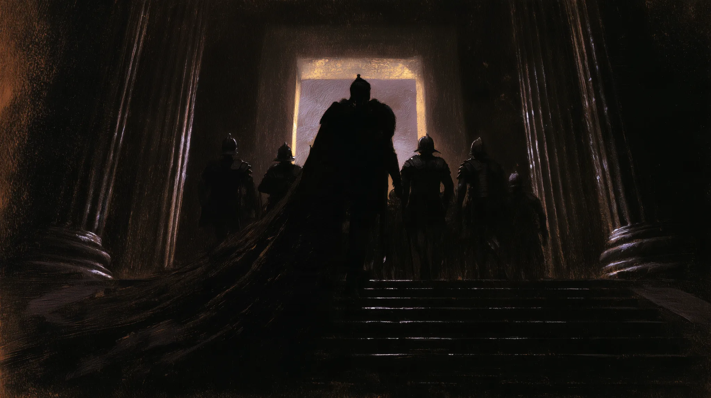
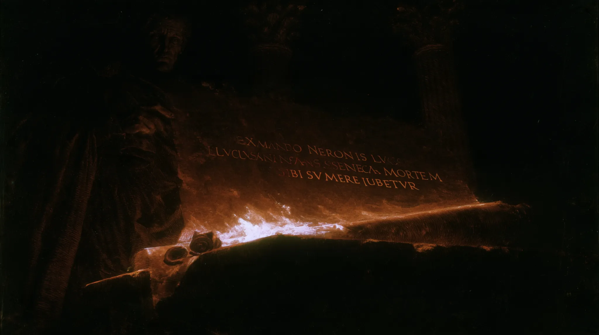
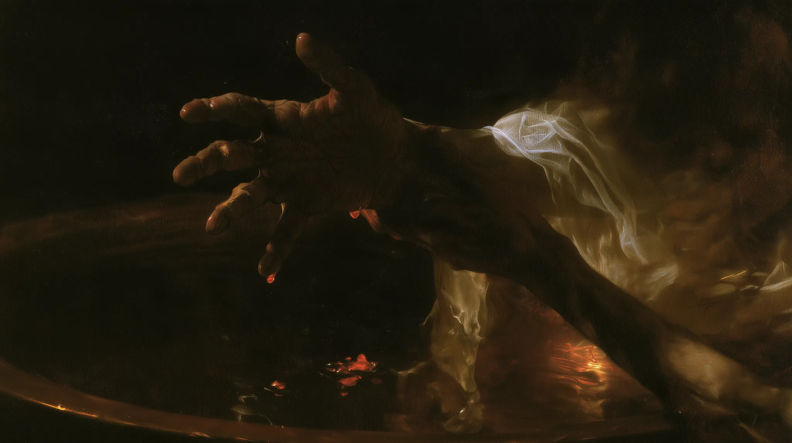
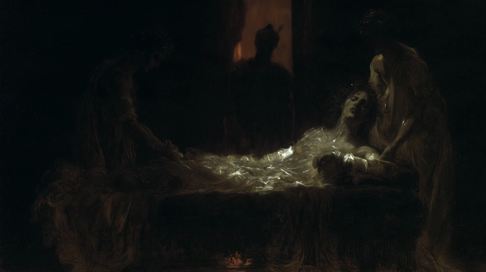
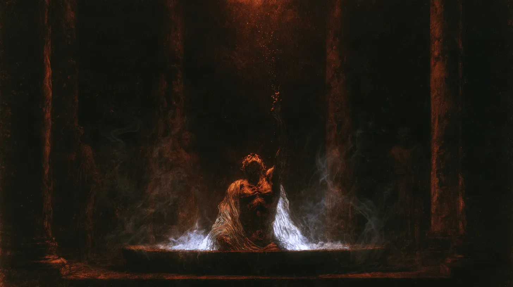
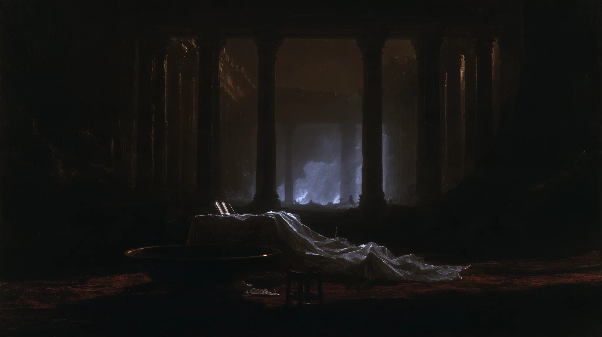

THE DEATH
OF SENECA
Nine images. The last hours of a philosopher, the witnesses, and the room that remains.
ENTER THE SEQUENCERome, AD 65. An imagined visual sequence after Tacitus. The images follow the event from the soldiers' arrival to the empty chamber. This is art, not an archaeological reconstruction.
09 IMAGES / 2026







The Latin passages are short extracts from Tacitus' account, not inscriptions reproduced from the paintings. English renderings are editorial translations. The lettering in The Order is invented visual material and should not be read as an authentic Roman document.
Before the images.
Before beginning this series, I read Seneca's philosophical writings and his letters, alongside Tacitus's account of his final hours. I wanted to approach the scene through more than its visible actions: Seneca's reflections on mortality, fear, human agency and composure informed how I imagined the philosopher and those around him.
I worked toward historical and psychological precision wherever the texts permitted it. The faces, the architecture, the gestures and the light remain acts of interpretation. These images attempt to understand an experience that no surviving account can show us directly.
DLORIAN · ARTIST'S NOTEHow a death
acquires a face.
Why include Rubens here? Because Seneca's death has been represented through images that were themselves acts of invention. Rubens' The Death of Seneca (c. 1612–13) made the philosopher's body the centre of the scene. For that body, he drew on an ancient statue then believed to show the dying Seneca. The sculpture is now identified as an old fisherman.
Jacques-Louis David later turned the death into an expansive scene of gestures and witnesses. These works do not verify how Seneca looked or where he died. They reveal how different periods have chosen to see him. The images above make a different choice: the person gradually yields to objects, shadow and an empty room.


The statue that informed Rubens' work, long called the dying Seneca, is now known as an Old Fisherman. A famous image of the philosopher was partly built on a mistaken identity. Nationalmuseum research ↗ · Louvre sculpture ↗
What remains
of the record.
Our access to Tacitus comes through manuscripts copied centuries after Seneca's lifetime. Among the witnesses to the later books of the Annals is the eleventh-century Laurentian manuscript Plut. 68.2, held in Florence.
The manuscript is a material witness to the text's transmission. It is not a contemporary record of the events in AD 65.
A death
recorded later.
In AD 65, Nero ordered Seneca's death. Tacitus describes the soldiers reaching his villa near evening, Seneca addressing his friends, Pompeia Paulina's decision to die with him, the slow loss of blood and the final attempt to hasten death through poison and heat.
Tacitus wrote decades after these events. What survives is an account, not an eyewitness image. The Roman buildings, faces, gestures and rooms in this series are deliberately invented.